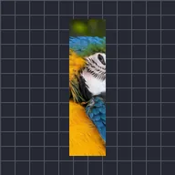

Buigen

Buigt de laag langs een cirkelboog; de kant van Oorsprong blijft staan en de andere kant draait naar de ingestelde hoek, een positieve hoek naar links. Werkt het best op lange, smalle lagen.
Instellingen
| Instelling | Type | Bereik | Standaard |
|---|---|---|---|
| Oorsprong | Keuze | Links, Rechts, Boven, Onder | Onder |
| Hoek | Hoek | -180° tot 180° | 0° |
| Begin | Getal | 0% tot 100% | 0% |
| Voor begin | Keuze | Bevriezen, Naar dezelfde kant buigen, Naar andere kant buigen | Bevriezen |
| Kop afstemmen | Getal | 0% tot 100% | 75% |
| Staart afstemmen | Getal | 0% tot 100% | 25% |